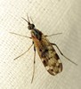
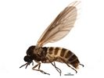
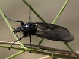
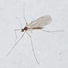
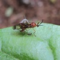
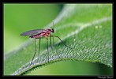
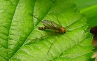
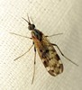
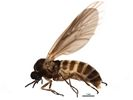
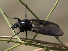
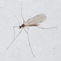
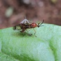
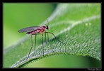
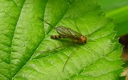
 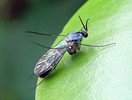
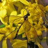
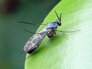
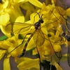
 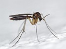
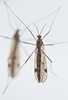
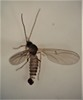
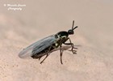
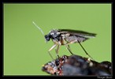
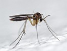
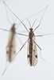
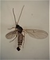
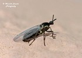
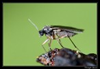
Key to families of Bibionomorpha
1.
- Wing well-developed, longer than thorax.


2
- Wing absent or greatly reduced (usually shorter than thorax).


23
- Ocelli absent.

3
- Ocelli present.

4
- Tarsomere 1 much shorter than tarsomere 2 or, if approximately equal, with four or fewer tarsomeres
and at most two veins posterior to R5.


Cecidomyiidae, in part
- Tarsomere 1 longer than or equal to tarsomere 2, tarsus with five tarsomeres. At least three veins posterior to R5.

Rangomaramidae, part
Rogambara
Cabamofa
- Wing with discal cell.

5
- Wing without closed discal cell.

6
- Wing with a supernumerary crossvein (crossvein R-R) forming cell br3 between R2+3 and R4+5.
Anal lobe of wing weak.

Pachyneuridae, in part
Cramptonomyiinae
- Wing without supernumerary crossvein. Anal lobe better developed.
Anisopodidae, in part
- Costa continuous around the wing. Tibiae without apical spurs.
Small fragile midges with weakly veined wings: R with not more than 2 branches.
 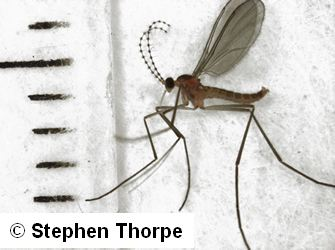
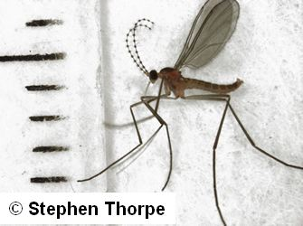
Cecidomyiidae
Lestremiinae
- Costa not continuous around wing. Tibiae with or without apical spurs.

7
- At least t2 and t3 without distinct apical spurs.

8
- Tibia with distinct apical spurs.

11
- Pulvilli well developed; R with 4 branches.


Axymyiidae
- Pulvilli absent or poorly developed; R with not more than 3 branches.
9
- Palpi one-segmented.
Costa ending at Rs in middle of wing. M with 2 branches. Eyes widely separated below antennae.
Scatopsidae
- Palpi four-segmented. Costa extending beyond RS to the apex of the wing .

10
- M with 2 branches. Eyes widely separated below antennae.
Bibionidae
Pleciinae
- M with 3 branches. Eyes meeting or nearly meeting sagittally below antennae.

Canthyloscelididae
- Antennae long, segments well separated.

12
- Antennae short, flagellomeres short, broad, and not easily distinguished.
*** Not correct. Families with long antenna keys out here as well ??? ***

14
- R with 2 branches.

Rangomaramidae, in part
- R with 3 or 4 branches. Slender, long legged and long winged flies.


13
- Antennae long and first flagellomere very long. R with 3 branches
. Fore tibia with 1, mid and hind tibia with 2 apical spurs.

Hesperinidae
- Antenna elongate, but first flagellomere not long. R with 4 branches. Tibiae without apical spurs.

Pachyneuridae, part
- Pulvilli and lobate empodium well-developed. Antenna inserted below the compound eyes.
Antennae fairly short, half to two-thirds as long as head. Eyes of males holoptic, distinctly bisected.

Bibionidae, in part
- Pulvilli and lobate empodium absent or poorly developed. Antennae inserted near the middle of the compound eyes, or above.
15
- Cell br and bm forming one cell and with six veins arising from this basal cell
(crossveins r-m and m-cu present). R with 3 branches: R1 simple, R2+3 and R4+5 fused at base. Sc and A1 complete, reaching margin of wing.

Anisopodidae, part
Mycetobiinae
- Cell bm open to wing margin, or if cells br and bm forming one cell, at most with five veins arising from this basal cell. R with 2-3 branches;
Sc and A1 not always reaching margin of wing
16
- Insertion of abdomen on thorax broad, including most of the mediotergite. Eyes meeting in a narrow bridge
above the antennae. Stem and fork of vein M subequal in length, with fork distinctly bell-shaped. All mesopleural sclerites bare.
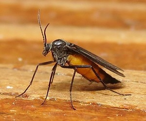


Sciaridae
- Insertion of abdomen on thorax narrow, leaving most of the mediotergite free. Eyes not connected dorsally. Fork of vein M usually
much longer than stem, with fork lanceolate rather than bell-shaped. Usually some mesopleural sclerites at least weakly haired.


17
- Cubital fork and medial fork connected by a crossvein or fused for a short distance, i.e.,
CuAl connected with stem of M1 and M2, well distally to crossvein Hu, by a distinct crossvein or by a short contact or fusion.

18
- Cubital fork (in some genera reduced to CuA) and medial fork separate to wing base, i.e., CuAl (or CuA) not connected to stem of M1 and M2,
or at most basally or very near to level of crossvein Hu.

21
- R4 present and long (at least half as long as R5). Sc short (sclerotized for only a short section and
continuing as a weak fold) and ending free. Postpronotum with one or more long fine setae, or longish bristles. Wing membrane with macrotrichia.

Ditomyiidae
- Vein R4 absent or if present, less than half as long as vein R5. Sc almost always long and ending in costa or vein R (seldom ending free).
Postpronotum bare or with very short setae or hairs. Wing membrane with or without macrotrichia .
19
- Crossvein R-M present .
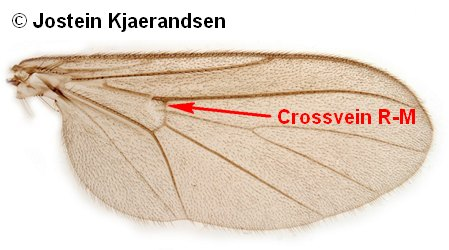
20
- Crossvein R-M absent because of contact or partial fusion of R and M.
Keroplatidae
- Crossveins R-M and bM-Cu both distinct forming a straight line; medial vein without a basal section.
Rq absent.
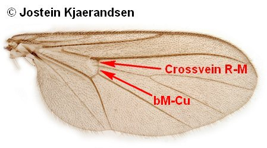
Diadocidiidae
- Crossvein bM-Cu well proximal to R-M; medial vein with distinct basal section. R4 present.

Bolitophilidae
- Antennal base above the middle of the head. Head flat or slightly concave on back side.
Pronotum without strong bristles.

Manotidae
- Antennal base inserted about the middle of the head. Head with convex occiput. Pronotum with or without long bristles.

22
- Veins Rs and R1 separated from level of crossvein Hu; stem of M, including base of medial fork absent,
i.e., M1 and M2 present as detached veins on distal part of wing; anal vein reduced. Pronotum without long bristles. Mouth parts long, slender, several
times as long as height of head.


Lygistorrhinidae
- Vein Rs arising from R1 well distally to Hu; stem of M present or absent, but base of medial fork absent only exceptionally; anal vein mostly distinct.
Pronotum usually with long bristles.
Mycetophilidae
- Ocelli absent.

Cecidomyiidae, part
- Ocelli (at least anterior one) present.
24
- Tibiae without apical spurs.
Cecidomyiidae, part
- Tibiae with apical spurs, although sometimes weak.
25
- Eye bridge present. Palpus at most three-segmented (usually one-segmented in reduced-winged species.
Sciaridae, part
- No eye bridge, i.e., eyes distinctly separated. Palpus with three or more segments.
26
- Antennae arising from near or dorsal to centre of eyes.
Mycetophilidae, part
- Antennae arising ventral to eyes.
27
- Antenna short, first flagellomere as long as wide
Males of Penthetria funebris Meigen (Pleciinae).
Bibionidae, part
- Antennae long, first flagellomere at least as long as head.Females of Hesperinus imbecilis.
Hesperinidae, part